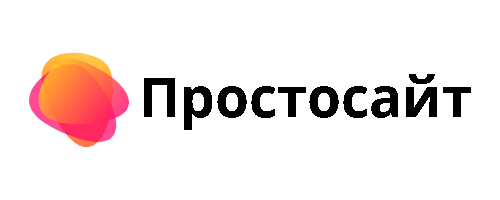

Что такое эфириум: Всё, что вам нужно знать об этой криптовалюте
Эфириум — это программная платформа с открытым исходным кодом, основанная на технологии блокчейн. Эта платформа позволяет разработчикам создавать и развёртывать на ней децентрализованные приложения (даппы), такие как Status или Metamask.
Как две ведущие криптовалюты по рыночной капитализации, биткоин и эфириум часто упоминаются в одном и том же контексте. Поэтому новичкам может быть трудно сразу понять, что такое эфириум и чем он радикально отличается от биткоина. На официальном сайте под слоганом Build unstoppable applications («Создавайте приложения, которые невозможно остановить») вы найдёте следующее описание эфириума:
"Децентрализованная платформа, использующая смарт-контракты: приложения, которые работают как юридические контракты без каких-либо рисков простоев, цензуры, мошенничества или вмешательства третьих сторон."
Про эфириум часто говорят, что он призван стать «мировым компьютером».
Стоит признать, что оба этих определения сложно назвать доступными или исчерпывающими. Поэтому и написана данная статья, призванная стать руководством по эфириуму. В ней вы сможете найти ответы на наиболее важные вопросы, связанные с платформой, узнать её историю, ознакомиться с некоторыми техническими аспектами, плюсами и минусами. Также мы попробуем представить, как будет выглядеть её будущее.
В качестве отправной точки подумаем об эфириуме как о талантливом и более универсальном младшем брате биткоина. Поехали!
История эфириума
Кто такой Виталик Бутерин
Эфириум начался с одного человека, и этот человек — Виталик Бутерин. В отличие от биткоина, за эфириумом стоит реальная личность, если хотите, лидер. Бутерин — российско-канадский программист и журналист, известный прежде всего своей работой над эфириумом и тем, что в 2011 году он стал соучредителем журнала «Биткоин». Он также известен как один из создателей криптовалютного торгового сайта Egora.
Но прославил Бутерина именно эфириум. Виталик разработал концепцию платформы в 19 лет. Он получил стипендию Питера Тиля в размере $100 000, бросил университет, где изучал информатику, и начал развивать свой проект.
Теперь он возглавляет исследовательскую группу эфириума, работая над модернизацией платформы. Он путешествует по всему миру, рассказывая общественности (в том числе мировым лидерам, со многими из которых он встретился лично) об эфириуме и его возможностях.
Бутерин — видный представитель криптовалютного сообщества. Вы можете посетить его официальный сайт, где он публикует свои статьи, или подписаться на его Твиттер.
Ранние дни эфириума
Работая над биткоином в 2013 году, Бутерин обратил внимание на то, у этого блокчейна нет собственного языка для написания сценариев. Он пришёл к выводу, что это большое упущение, которое стоит исправить. Не получив широкой поддержки этой идеи, он занялся собственным проектом.
В конце 2013 года был выпущен white paper эфириума. В этом документе Бутерин так описал свою цель: «обеспечить блокчейн встроенным полноценным языком программирования, который можно использовать для создания смарт-контрактов».
Смарт-контракты прославили эфириум. Это контракты, написанные программным кодом и хранящиеся в блокчейне. Они делают транзакции «отслеживаемыми, прозрачными и необратимыми» (подробнее об этом позже).
Бутерин официально анонсировал эфириум на Североамериканской биткоин-конференции в Майами в январе 2014 года. Он ожидал, что люди быстро укажут ему на недочёты и ошибки. Но, к его удивлению, многие безоговорочно поддержали молодой проект.
Как рос эфириум
Эфириуму удалось завоевать доверие общественности, и для управления его развитием была создана некоммерческая организация Ethereum Foundation. Развитие было профинансировано ICO, стартовавшим в июле 2014 года.
В ходе первичного предложения монет эфириум выпустил собственный токен — эфир (ETH). ETH — это валюта, которая управляет всем в экосистеме эфириума. Ethereum Foundation провела первоначальное распределение ETH через публичную предпродажу, собрав 31 591 биткоин (в то время это было $18 439 086) в обмен на 60 102 216 ETH.
В конце 2014 года сформировалась сеть с большим количеством узлов (компьютеров, на которых запущен протокол эфириума).
Эфириум привлёк множество разработчиков, которые занялись базовой технологией и созданием собственных приложений приложения поверх блокчейна. Согласно State of the DApps (некоммерческому кураторскому каталогу децентрализованных заявок), сейчас на эфириуме работает более 950 проектов. Основная технология уже прошла через несколько версий. Токен ETH, стоивший всего несколько центов, вырос в цене до $1500.
На платформе эфириума было проведено бесчисленное количество ICO, и эта тенденция, похоже, сохранится и в обозримом будущем продолжит набирать темп. Были и проблемы. Одно событие едва не утопило весь проект.
Взлом DAO
DAO — это децентрализованные автономные организации, которые работают по правилам, закодированным в смарт-контракте на блокчейне. Одна из таких организаций, основанная Кристофом Дженчем в 2016 году (она так и называлась — DAO), вызвала в сообществе серьёзные переполох. DAO представляла собой сложный смарт-контракт, призванный управлять созданием децентрализованного венчурного фонда, который мог бы вкладывать свой капитал в различные проекты развития децентрализованных приложений.
Код DAO должен был исключить необходимость доверять людям и обеспечить автономное функционирование проекта.
Принцип работы DAO был довольно прост. Если бы вы хотели повлиять на деятельность децентрализованного венчурного фонда, вам пришлось бы купить DAO-токены за ETH. Желающие получить финансирование выдвигали предложения, которые выставлялись на голосование. Чтобы продвинуться вперёд, было необходимо получить 20% голосов всех держателей токеновDAO. Чем больше денег вы вкладывали в DAO, тем больше весаимел ваш голос.
Инвесторы бросились покупать токены, потратив более $150 млн. (рекордная сумма). Однако, как только инвестиции были собраны, DAO подверглась атаке.
17 июня 2016 года кто-то использовал уязвимость в стандартном коде смарт-контракта и списал одну треть средств, хранящихся у DAO, — $50 млн. на тот момент. Это событие подробно описано во множестве статей, поэтому здесь мы обойдёмся без технических подробностей.
Суть в том, что молодая технология получила удар в спину. В конечном итоге сообщество эфириума выработало решение, которое помогло устранить последствия этого ЧП.
Хардфорк и Ethereum Classic
Хардфорк — это радикальное изменение протокола, которое делает ранее недействительные блоки и транзакции действительными (или наоборот) и требует, чтобы все узлы и пользователи обновились до последней версии программного обеспечения протокола. Иногда вы можете услышать такое понятие, как софтфорк.
Вот краткое объяснение различий между двумя видами форков:
- хардфорк: предстоящее обновление программного обеспечения будет конфликтовать с текущей версией сети;
- софтфорк: предстоящее обновление программного обеспечения совместимо с текущей версией сети.
Взлом DAO привел к хардфорку. Сообщество проголосовало за откат блокчейна до того момента, когда нападение ещё не произошло. Это было серьёзное изменение, и не все с ним согласились.
Спорное предложение вызвало раскол, который привёл к появлению двух ветвей эфириума — двух версий одной и той же исходной сети. Эфириум, который мы знаем сегодня, включает большинство пользователей и лидеров сферы (включая Бутерина): они приняли измененную историю транзакций. Меньшинство, которому идея не понравилась, создало Ethereum Classic.
Ethereum Classic не достиг высот «настоящего» эфириума, но по-прежнему существует и неплохо себя чувствует.
Хардфорк доказал, что эфириум в целом довольно устойчив. Закончив обзор истории, перейдём к тому, как работает эфириум.
Майнинг эфириума
Каждый раз, когда кто-то хочет отправить эфир или создать смарт-контракт, децентрализованная система должна записать и подтвердить точность события. Эту важную задачу выполняют не люди или компании, а тысячи компьютеров по всему миру, которые подключены к сети эфириума. Эти компьютеры, как правило, принадлежат людям, которых принято называть майнерами.
Название вводит в заблуждение; более точным термином будет «процессоры транзакций». Чтобы убедиться, что транзакции надёжно и правильно записаны, компьютеры решают сложные алгоритмическиезадачи, и делают это как можно быстрее, чтобы получить вознаграждение (оплачиваемое в ETH). Этот алгоритм получил название Proof-of-Work (доказательство работы), и именно он обеспечивает целостность и жизнеспособность сети.
У такого метода есть некоторые недостатки, например, он потребляет огромное количество электроэнергии и требует производительного оборудования. Для большинства рядовых людей он слишком дорог, что привело к сосредоточению майнеров в майнинг-пулах. Другими словами, этот метод привёл к централизации.
В августе 2017 года Бутерин объявил о планах уйти от Proof-of-Work. В своём предложении, часто называемом Casper, он заявил, что эфириум перейдёт от чистого Proof-of-Work к гибридному алгоритму Proof-of-Work/Proof-of-Stake (доказательство владения). В отличие от консенсусного протокола PoW, протокол PoS проверяет транзакции посредством усилий валидаторов (этот термин пока не принят как окончательный), которые вкладывают свои монеты в специализированные кошельки. Участники системы отдают свои средства с пониманием того, что потеряют депозиты, если не будут следовать правилам.
В отличие от Proof-of-Work, где алгоритм платит майнерам, которые решают математические задачи для проверки транзакций и создания новых блоков, Proof-of-Stake позволяет валидаторам делать ставки на то, какой из блоков, по их мнению, будет добавлен в блокчейн. Если валидатор оказывается прав, он получает вознаграждение пропорционально своей ставке (или доле владения).
Casper предполагает смешение функций старого метода PoW и нового PoS с постепенным переходом к последнему. Сторонники Casper надеются, что это изменение сделает протокол более экологичным, не требующим огромных затрат энергии. Между тем противники указывают на то, что его запуск уже не раз откладывался, а это значит, что PoS на самом деле не подходит эфириуму. Другие подчёркивают более важную проблему — обеспечение безопасности (учитывая, что в сети вращаются миллиарды долларов). Впрочем, разработчики обещают, что PoS будет более безопасным.
Как работает эфириум
В контексте эфириума блокчейн действует как публичный реестр, в котором фиксируется всё, что происходит в сети, в режиме реального времени. Некоторые из основ технологии блокчейн, которые позволяют использовать биткоин, обеспечивают и работу эфириума. Структура блокчейна эфириума похожа на то, что мы видим у биткоина. Так, копия каждой транзакции распространяется по всей сети, и каждый узел (компьютер с программным обеспечением эфириума) сети хранит копию этой истории.
Этот распределённый цифровой реестр может быть легко синхронизирован через масштабную децентрализованную сеть. Это то, что делает эфириум доступным для любого человека, который может попасть в интернет, независимо от своего местоположения.
В сети эфириума есть блоки данных, состоящие из транзакций и смарт-контрактов. Эти блоки соединены вместе и представляют собой полную запись истории эфириума начиная с первого блока. Блоки создаются некоторыми пользователями и распространяются среди других пользователей, которые проверяют их и подтверждают, что они «правильные».
У каждого блокчейна есть определённый тип алгоритма достижения консенсуса. Сеть использует эти алгоритмы для согласования единственно верного значения данных. Как мы уже обсуждали, новые эфириум-транзакции пока подтверждаются майнерами с использованием той же системы Proof-of-Work, что и у биткоина, но грядут перемены, которые уже давно находятся в разработке.
Теперь давайте посмотрим на некоторые ключевые особенности эфириума.
Виртуальная машина эфириума \(EVM\)
До появления эфириума криптовалюты обладали скудным диапазоном функций (а иногда и вовсе единственной функцией). Так, функция биткоина — быть цифровой валютой.
Разработчики зашли в тупик: им было необходимо либо расширить функциональность биткоина на существующем блокчейне (что очень сложно с технической стороны), либо создать с нуля новую платформу. Признав этот тупик, Бутерин начал работу над EVM.
Вот что писало издание The Merkle:
"Этот проект [EVM] фокусируется на предотвращении атак типа «отказ в обслуживании», которые довольно распространены в мире криптовалют. Более того, EVM гарантирует, что программы не имеют доступа к состоянию друг друга, таким образом, связь может быть установлена без каких-либо потенциальных помех."
Этот проект [EVM] фокусируется на предотвращении атак типа «отказ в обслуживании», которые довольно распространены в мире криптовалют. Более того, EVM гарантирует, что программы не имеют доступа к состоянию друг друга, таким образом, связь может быть установлена без каких-либо потенциальных помех.
Давайте попробуем разобраться, что такое EVM и зачем она нужна.
Каждый раз, когда программа или транзакция активируются, сеть должна обрабатывать эти данные. Контракты, написанные на разных языках программирования, скомпилированы в «байт-код», который EVM может расшифровать и выполнить (что-то вроде Google Translate для кода). Это означает, что любой может запускать любую программу, независимо от того, на каком языке она написана, если есть достаточно времени и памяти.
Все узлы эфириума выполняют контракты с использованием своих EVM, и это изобретение значит очень много, потому что оно позволяет выстраивать взаимодействие более эффективным способом, чем когда-либо. Теперь нет необходимости в собственном блокчейне для каждого нового проекта.
Смарт\-контракты
Смарт-контракты — это тот самый «секретный ингредиент» эфириума. Концепцию смарт-контрактов предложил в 1996 году учёный Ник Сабо (по одной из версий, он и есть Сатоши Накамото). Смарт-контракты — это компьютерные программы, которые контролируют передачу цифровых валют или активов между сторонами, если выполняются определённые условия.
Смарт-контракты выполняют операции типа if-then («если..., то»). Если, например, смарт-контракт используется для управления торговым автоматом, то он будет выглядеть примерно так: «Если кто-то помещает доллар в торговый автомат, торговый автомат выдаёт банку кока-колы».
Эфириум обеспечивает основу для этих контрактов и имеет при этом уровень функциональности, недоступный большинству других криптовалют. Предполагается, что эфириум найдёт применение в таких сферах, как системы идентификации, страховые выплаты и т.д. (это лишь небольшая часть).
Всё это возможно благодаря смарт-контрактам. Они эффективно поддерживают транзакции и соблюдение договорённостей в полностью цифровой среде. Давайте рассмотрим конкретный пример.
Скажем, мы хотим создать службу вроде Uber. Для этого мы можем подготовить смарт-контракт для отслеживания координат GPS чьего-либо телефона: если телефон достигнет целевого назначения, то смарт-контракт автоматически проведёт выплату другому пользователю, чей GPS совершил ту же поездку (то есть водителю).
Водителю можно было заплатить, например, $15 без необходимости сторон доверять друг другу или даже друг с другом общаться. Водитель гарантированно получит оплату, если доставит другое лицо в указанную точку по GPS.
Эфириум может сделать нашу повседневную жизнь более эффективной и экономичной, автоматизировав различные процессы и устранив посредничество. Приведённый пример — лишь один из тысяч возможных вариантов использования технологии.
Токен ERC20
ERC20 — это название набора стандартных требований для тех, кто хочет выпустить новый токен на блокчейне эфириума. ERC расшифровывается как «Запрос на комментарии эфириума».
Введённые в конце 2015 года требования ERC20 были неофициальными руководящими принципами, пока не получили официального оформления на странице эфириума на GitHub. Основное назначение ERC20 — обеспечить, чтобы токены на основе эфириума вели себя предсказуемым образом во всей экосистеме, децентрализованные приложения и смарт-контракты одинаково взаимодействовали на всей платформе и чтобы все токены соответствовали фиксированному стандарту безопасности. В общем, речь идёт о стандартизации.
Учитывая огромное количество ICO, проводимых на эфириуме, неудивительно, что потребовался стандарт. По состоянию на январь 2018 года для токенов ERC20 существует более 21 000 смарт-контрактов, и именно стандартизация гарантирует их стабильную работу в сети эфириума.
Запас эфира, или «газ»
Мы уже упоминали, что эфир — это валюта, которая заставляет экосистему эфириума работать. Веб-сайт эфириума объясняет это следующим образом:
Эфир — необходимый элемент, топливо для работы распределённой платформы приложений эфириум. Это форма, в которой клиенты платформы оплачивают выполнение запрошенных операций.
Стоимость этого топлива определяется сложностью вычислений для действия, которое выполняет сеть. В основном на «газе» не разоришься, но некоторые вещи стоят больше, чем другие. Никто не работает бесплатно, и это позволяет избавиться от захламления системы.
Кому нужен эфир? Любой разработчик, желающий создать приложение на эфириуме, или любой человек, желающий получить доступ к смарт-контракту, должен располагать эфиром. Эфир также может использоваться как валюта. По мере того как сеть биткоина замедлилась в своём развитии, а транзакционные комиссии стали выше (особенно это было заметно в конце 2017 — начале 2018 года), некоторые пользователи переключились на эфир как средство обмена.
Общий запас эфира не ограничен, как, например, у биткоина. Объём предложения и темпы выпуска были в значительной степени обусловлены первоначальным сбором средств в 2014 году. Распределение выглядит следующим образом:
72 млн. ETH были созданы и проданы в ходе предварительной продажи;
24 млн. ETH были созданы и переданы в фонд развития, и большая часть этих средств ушла разработчикам и ранним сторонникам, а остальные — в Ethereum Foundation;
1,4 млн. ETH пришлось на так называемые Uncle Rewards — награды за запись альтернативных или «очень близких, но не совсем правильных» блоков.
На данный момент в мире циркулирует порядка 98 млн. ETH (на момент написания статьи).
Некоторые предполагают, что по мере того, как эфириум меняется, уровень выпуска ETH также может быть изменён. Однако ранее звучали обещания, что такого не случится. Как написал один из пользователей Reddit, «Casper ничего не изменит в плане запаса токенов или уровня инфляции. Это просто алгоритм PoS, построенный поверх PoW».
В 2017 году уровень эмиссии эфира составлял 14,75%, или примерно 5 ETH за блок. Следует также отметить, что выпуск эфира ограничен 18 млн. ETH в год (это число составляет 25% от размера привлечённых в ходе ICO средств).
Теперь у вас должно быть базовое представление о том, как работают блокчейн эфириума, токен ETH, смарт-контракты, стандарты ERC20 и протоколы консенсуса PoW/PoS. Для тех, кто хочет вникнуть в техническую сторону вещей, есть отличные статьи об инновационности эфириума.
Как можно использовать эфириум?
Пожалуй, самая выдающаяся особенность эфириума — широкий спектр возможностей, которые он предлагает пользователям.
Не стоит забывать, что ETH никогда не был валютой как таковой. Однако многие используют его в качестве переходного звена между фиатной валютой и альткоинами. Например, если вы хотите купить токен Lisk, вам нужно поменять свою фиатную валюту на биткоин или эфир, а уже потом за них покупать Lisk.
Некоторые просто используют его в качестве упомянутого топлива для экосистемы. ETH также продаётся и покупается спекулянтами и инвесторами, которые считают, что стоимость проекта эфириум и сети даппов со временем вырастет. Практика показывает, что они правы.
Конечно, у эфириума есть и много других применений:
- ICO. Львиная доля ICO, произошедших за последние несколько лет, была размещена на блокчейне эфириума. Когда речь заходит о финансировании проектов с открытым исходным кодом, эфириум —предпочтительный вариант.
- Даппы. На эфириуме построено множество децентрализованных приложений, и их число растёт. Существует Augur, рынок децентрализованных прогнозов; etherTweet, основанная на бокчейне платформа без цензуры; TenX, приложение, которое планирует позволить людям использовать эфир почти везде; а Uport предоставляет пользователям возможность полностью контролировать свою личную информацию. И это только малая часть.
- DAO. Помимо той самой печально известной DAO, есть другие примеры децентрализованных автономных организаций, возникающих на эфириуме. Технически криптовалюта Dash — это DAO, как и токен Digix.io.
Когда вы рассматриваете будущее использование эфириума, клише «верхушка айсберга» хорошо описывает текущую реализацию потенциала. Варианты использования эфириума ограничены лишь воображением разработчиков.
Преимущества эфириума
- Неизменность. Данные, записанные в блокчейне, не могут быть изменены или удалены третьим лицом.
- Без цензуры. Приложения эфириума основаны на сети, где действует принцип консенсуса. Это делает цензуру невозможной.
- Защищённость. Защищённый криптографией блокчейн доказал, что он невосприимчив к мошенничеству или взлому. У эфириума нет центральной точки отказа.
- Прозрачность. Все записи доступны для всех. В будущем, по слухам, ожидается конфиденциальность, но пока все данные открыты.
Недостатки эфириума
У эфириума много преимуществ, но, увы, ничто не идеально. Вот несколько недостатков:
- Код смарт-контрактов не идеален. DAO стала ярким примером того, как человеческая ошибка может привести к серьёзным проблемам. Если ошибка в коде становится явной, нет реального способа остановить атаку, за исключением (быстрого!) консенсуса сети и/или переработки базового кода.
- Сделки на эфириуме происходят не так быстро. Хотя в некоторых случаях скорость не важна, другие сценарии могут сильно пострадать из-за этого недостатка. Эфириум может обрабатывать около 20 транзакций в секунду, в то время как Visa обрабатывает более 1500.
- Масштабирование — проблема почти для любого блокчейна, и эфириум не стал исключением. Даже Бутерин сомневается в текущей способности эфириума к масштабированию:
"Масштабируемость [в настоящее время] отстой; в дизайне блокчейна много узких мест, ведь отдельные узлы должны обрабатывать все транзакции в сети."
Как начать работать с эфириумом
Дочитав до этого момента, вы, возможно, захотели присоединиться к сообществу эфириума. Чтобы запустить эфириум, вам достаточно загрузить клиент. Как и другие подобные программы, клиент эфириума будет подключаться ко всем другим компьютерам, на которых работает эфириум.
Клиентское программное обеспечение позволит вам совершать различные действия, наиболее важные из которых:
- подключение к сети эфириума;
- создание новых транзакций и смарт-контрактов;
- запуск смарт-контрактов;
- майнинг новых блоков (или просто эфира).
Загружая и запуская клиент эфириума, вы превращаете свой компьютер в узел в сети с упомянутой EVM. Он будет вести себя так же, как и все остальные узлы, использующие это программное обеспечение.
Как купить эфир
Если вы хотите купить немного эфира, сделать это довольно просто. Вам достаточно выполнить следующие шаги.
- Во-первых, создайте учётную запись на бирже. Coinbase, вероятно, проще всего в использовании, но она взимает более высокую плату (опытные трейдеры предпочитают использовать GDAX). Есть много других вариантов, например Binance, Kraken, Gemini и Bittrex. Выберите биржу по вкусу и создайте аккаунт.
- Пройдите процесс проверки. Любая авторитетная биржа потребует, чтобы вы подтвердили свою личность несколькими способами. Вам придётся загрузить несколько документов и фотографий и предоставить немного информации о себе. В большинстве случаев вы сможете начать работу сразу же, но для вывода средств (за пределами определённого лимита) проверка должна быть завершена, что занимает несколько дней.
- Пополните свой счёт на бирже фиатной валютой. Обычно это осуществляется посредством банковского перевода или с помощью кредитной/дебетовой карты (за такие переводы комиссия выше). Принимаемые способы оплаты и время, необходимое для перевода средств, варьируются в зависимости от биржи.
- Начните покупать эфир. После регистрации, проверки и внесения средств вы можете перейти к делу. У разных бирж разные интерфейсы, и по большинству из них есть видеоруководства, которые помогут вам, если вы застряли на каком-либо из этапов.
Начните покупать эфир. После регистрации, проверки и внесения средств вы можете перейти к делу. У разных бирж разные интерфейсы, и по большинству из них есть видеоруководства, которые помогут вам, если вы застряли на каком-либо из этапов.
Как безопасно хранить эфир
Для того чтобы токены были надёжно защищены, необходимо строго контролировать приватные ключи. О каких ключах речь?
Эфириум использует асимметричную криптографию (специальный цифровой алгоритм) для генерации строк из чисел, которые действуют как ключи. Ваш открытый ключ генерируется кошельком и привязан к вашему закрытому ключу. Открытый ключ — это то, что вы используете для получения ETH, а также ваш адрес в блокчейне эфириума.
Закрытый ключ — это ещё одна длинная строка случайных символов, которая позволяет вам разрешать транзакции ETH.
Простая аналогия: ваш открытый ключ это — номер вашего банковского счёта, а приватный (закрытый) ключ — пин-код. Обращайтесь с ними соответственно.
У вас есть несколько вариантов хранения ETH. Вы можете оставить их на бирже, переместить в собственный кошелёк на компьютере или мобильном устройстве, в автономный аппаратный кошелёк или же в бумажный кошелёк.
С точки зрения безопасности оставлять криптовалюту на бирже не рекомендуется. Мобильные и десктопные кошельки немного безопаснее, но всё же подвержены риску взлома. Самый безопасный вариант — переместить ваши токены в аппаратный или бумажный кошелёк.
Представьте, что у вас есть $20 и вы можете оставить их лежащими в бардачке автомобиля. Это будет аналогом биржи. Если бы у вас было $1500, вы могли бы хранить их в своём кошельке и были бы очень осторожны с ним. Это похоже на мобильный или компьютерный кошелек. Если бы у вас было $100 000, вы, вероятно, оставили бы их на застрахованном банковском счёте или в сейфе. Это уже будет аппаратным кошельком.
Многие начинают с кошелька MyEtherWallet. Если вы хотите большей безопасности, присмотритесь к Ledger Nano S — самому популярному аппаратному кошельку.
Помните, что в сети не стоит раскрывать лишнюю информацию: не сообщайте онлайн о том, что у вас есть криптовалюта и как вы её храните. Небрежность в таких вопросах может сделать вас уязвимым для кражи вне зависимости от выбранного кошелька.
Также будьте осторожны при загрузке или установке любого кошелька, так как всегда есть риск фишинга.
Биткоин и эфириум: В чём разница?
Давайте рассмотрим некоторые ключевые моменты. Самое большое различие между этими двумя гигантами криптовалютного мира — их цели. Биткоин стремится стать средством обмена («цифровым золотом») и валютой, распространённой во всём мире. Эфириум хочет стать глобальной платформой, на которой работают децентрализованные приложения и смарт-контракты.
На этом рисунке представлены заметные различия между биткоином и эфириумом:

Это изображение демонстрирует, что представление о биткоине и эфириуме как о прямых конкурентах ошибочно. Они относятся к разным поколениям и разным способам применения технологии блокчейн. Однако популярность и растущая рыночная капитализация эфира приводят его к конкуренции со всеми криптовалютами. Так что в некотором роде соперничество всё же есть.
Конкуренты эфириума
Эфириум располагает гигантскими наработками, достаточным финансированием, преимуществом первопроходца и растущей командой первоклассных разработчиков. Но это не означает, что у него нет проблем.
Хотя некоторые рассматривают форк Ethereum Classic как позитивный пример принятия сообществом сложного решения, он определённо нанёс по эфириуму некоторый удар. Запланированный переход с алгоритма PoW на гибридную версию с PoS тоже может вызвать серьёзные неудобства. Другая проблема, на которую часто указывают, —трудности, с которыми сталкиваются разработчики при взаимодействии с эфириумом.
Так, консультант по блокчейну Брайан Шустер признал:
"Эфириум — одна из ведущих платформ для блокчейн-разработки в мире, но работать с ней очень тяжело в техническом плане. Требуется реальная сила воли, чтобы провести все необходимые исследования и получить рабочие приложения."
Но самая большая проблема эфириума — масштабирование. Эфириум всё ещё далёк от возможности запускать приложения с 10 млн. пользователей.
Это продемонстрировала основанная на эфириуме игра CryptoKitties, выпущенная в ноябре 2017 года. Её идея в том, что люди могут покупать и продавать цифровых кошек за реальные деньги с помощью смарт-контрактов. Они также могут выводить в своём «питомнике» уникальных животных. Котята — ограниченный ресурс со множеством «кэтрибутов», некоторые из которых чрезвычайно редки.
Игра вызвала ажиотаж, и в какой-то момент этот проект, в который было вложено более $6,5 млн., забрал на себя значительную долю трафикавсей системы.
Криптокотята значительно замедлили эфириум и показали, что ему ещё предстоит пройти долгий путь, прежде чем он будет готов работать в авральном режиме. По мере того как блокчейн эфириума становится всё обширнее, его неэффективность проявляется всё более ощутимо. Это проблема для всех, кто полагается на смарт-контракты эфириума.
Сообщество лихорадочно ищет решения, но как быстро они будут внедрены и насколько успешными окажутся, ещё предстоит увидеть.
Неудивительно, что ряд других блокчейнов, имеющих похожие цели и характеристики, начинают догонять эфириум.
Вот пять основных конкурентов эфириума (но есть и другие).
- QTUM должен объединить функциональные возможности биткоина и эфириума в формате блокчейна, удобного для бизнеса. Как и эфириум, QTUM может работать со смарт-контрактами. Он учёл ряд ошибок своего «старшего брата» эфириума и обещает их не повторять.
- Cardano был основан бывшими участниками команды эфириума. Это ещё один блокчейн, ориентированный на смарт-контракты. Его создатели вкладывают особые усилия в масштабируемость и демократизацию процесса голосования.
- NEO часто упоминается как «китайский эфириум». Этот проект нацелен на оцифровку многих видов традиционных активов для их использования в смарт-контрактах.
- Ethereum Classic — это продукт хардфорка эфириума, о котором мы не раз говорили. Очевидно, что он конкурирует с оригинальным эфириумом, делая всё то же самое, что и оригинальный блокчейн, только в меньших масштабах.
- Lisk, пожалуй, самый яркий конкурент эфириума. Будучи платформой для смарт-контрактов и даппов, Lisk достиг определённых успехов в работе с сайдчейнами, чтобы оптимизировать свою сеть и добиться её масштабируемости.
Будущее эфириума
Эфириум уже можно считать безумно успешным проектом, и нет сомнений, что над ним работает одна из самых новаторских команд киберпространства.
В последние месяцы криптовалютные рынки пострадали от серьёзного спада. В таких условиях технологичность, повышение эффективности и решение реальных проблем имеют особую ценность.
Пока эфириум твёрдо держит марку. Если вам нужны доказательства, подумайте о следующем:
- По мере того как токены, базирующиеся на эфириуме, растут в цене, активы базовой платформы также растут.
- Многим предпринимателям и разработчикам для использования сети необходим газ, и это органично стимулирует спрос на ETH и повышает его ценность.
- Несколько крупных компаний, такие как JPMorgan Chase, BBVA, Accenture, Microsoft и Intel, собрались вместе и создали группу под названием Enterprise Ethereum Alliance (EEA), которая фокусируется на разработке приложений, использующих блокчейн эфириума.
- Поскольку варианты использования даппов продолжают расширяться и технология растёт для удовлетворения спроса, эфириум, пользуясь этим трендом, расширяет свою сеть.
- Сообщество эфириума объединяет ярких, талантливых и умных людей. Оно не столь склонно к шумихе, как сообщества многих других блокчейн-проектов.
Этот список позволяет сделать вывод, что команду Бутерина в будущем ждёт ещё больший успех. Однако скептики придерживаются противоположного мнения. Они приводят следующие аргументы:
- Эфириум не сможет разобраться с сетевыми перегрузками достаточно быстро и отстанет от конкурентов.
- Виталик Бутерин — «точка отказа». Будучи публичным лицом и движущей силой эфириума, он практически незаменим. Если с Бутерином что-то случится или он просто решит забросить своё детище, это может убить проект.
- Многие из случаев использования эфириума (и его даппов) —теоретические или непрактичные. Есть версия, что команда эфириума ищет надуманные проблемы, чтобы подогнать под них «красивые» решения.
- Климат в сообществе может испортиться. Эфириум уже прошёл через один хардфорк, и не исключено, что в будущем его ждут другие. Последствия этого предсказать трудно, но разлад в сообществе в своё время сильно ударил по биткоину.
Заключение
Мы проследили историю эфириума, остановили внимание на его ключевых свойствах и технических элементах и обсудили его потенциал. Мы надеемся, что теперь принцип работы эфириума как платформы для децентрализованных приложений стал понятнее.
Стоимость токена ETH зависит от спроса и предложения, как и у любого другого актива. Если создание новых даппов продолжится и сеть эфириума будет по-прежнему привлекать инвесторов, цена продолжит расти. И наоборот.
Хотя по меркам мира криптовалют эфириум можно считать ветераном, на самом деле эта технология пока на ранней стадии своего развития. Многие в криптосообществе затаили дыхание и ждут, как она будет развиваться. Возможно, развитие эфириума — это ключ к децентрализованному будущему. Если платформа оправдает ожидания, она сможет сильно изменить не только некоторые отрасли бизнеса, но и всю нашу жизнь.